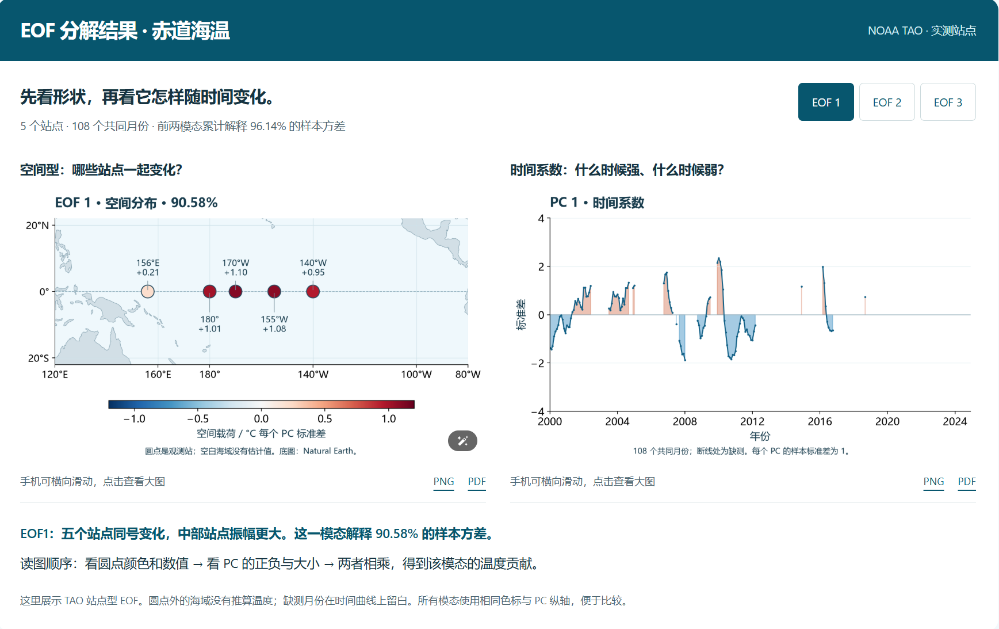

Physical Properties of Seawater
Driving question: Why is temperature alone not enough to compare the buoyancy of two water parcels?
Class notes
Density depends nonlinearly on temperature, salinity, and pressure. Warming usually lowers density, adding salt raises it, and pressure compresses water; “cold water is always heavier” is not an unconditional rule.
In-situ temperature at depth includes adiabatic compression. Potential temperature compares parcels after an imaginary adiabatic move to a common reference pressure; potential density also needs a stated reference pressure.
TEOS-10 distinguishes Practical Salinity \(S_P\)(conductivity-based, dimensionless) from Absolute Salinity \(S_A\)(often \(g/\mathrm{kg}\)); similar names do not make them interchangeable in code. Stratification asks whether a displaced parcel returns: \(N^{2}=-(g/\rho _{0})\partial \rho /\partial z\).
- Cabbeling: mixing two water masses with the same density but different T–S can produce denser water.
- Double diffusion / salt fingers: heat diffuses faster than salt, forming thin finger structures.
- SOFAR channel: a sound-speed minimum near 1,000 m lets sound travel thousands of kilometres.
In my own words
I used to think cold water must be heavier than warm water. Later I saw that salinity can reverse the conclusion: relatively fresh cold water can be lighter than salty warm water. Potential temperature and potential density also need a reference pressure; otherwise two numbers cannot be compared directly.
What I did not understand + How I worked it out
What I did not understand at first: if in-situ density increases with depth, isn't the stratification stable?
What I later worked out: pressure compression also increases density downward. Use potential density or \(N^{2}\) to see whether a displaced parcel returns.
Week 3 exit ticket
This week's record: Learned the EOF method and used figures from equatorial TAO temperature stations to practice reading spatial patterns and time coefficients.

Sources for this session: TEOS-10 · Thermodynamic definitions · Talley · Seawater properties